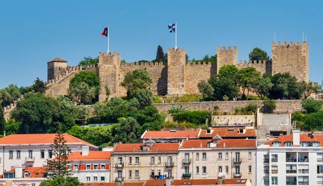

Pontos Turisticos da Europa
-
Coliseu de Roma

Itália
O Coliseu de Roma ou Anfiteatro Flaviano é um dos principais pontos turísticos da Itália e um dos monumentos mais famosos do mundo. Com uma construção que se iniciou no ano de 72 d.C e serviu como palco para gladiadores que lutavam entre si, ele atrai pelo menos 4 milhões de turistas todos os anos.
-
Torre Eiffel

França
A Torre Eiffel é um ponto turístico obrigatório em Paris, França. A sua construção foi em 1889 para celebrar os 100 anos da Revolução Francesa, e tem 325 metros de altura e 1.665 degraus.
-
Castelo de São Jorge
Portugal
Construído sobre a colina mais alta do centro de Lisboa, o Castelo de São Jorge é um dos monumentos mais emblemáticos e visíveis da capital portuguesa. Com origens no século XI, o castelo tem uma história que reflete os diversos povos e culturas que influenciaram Lisboa ao longo dos séculos. A começar pelos mouros, que dominaram a Península Ibérica por um bom tempo, e construíram e usaram o castelo como residência dos governantes e ponto estratégico de defesa.